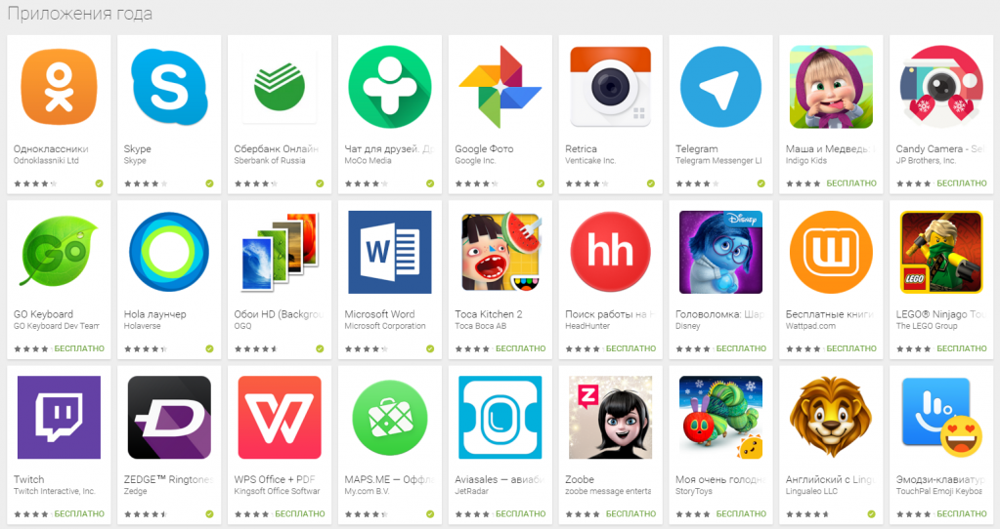
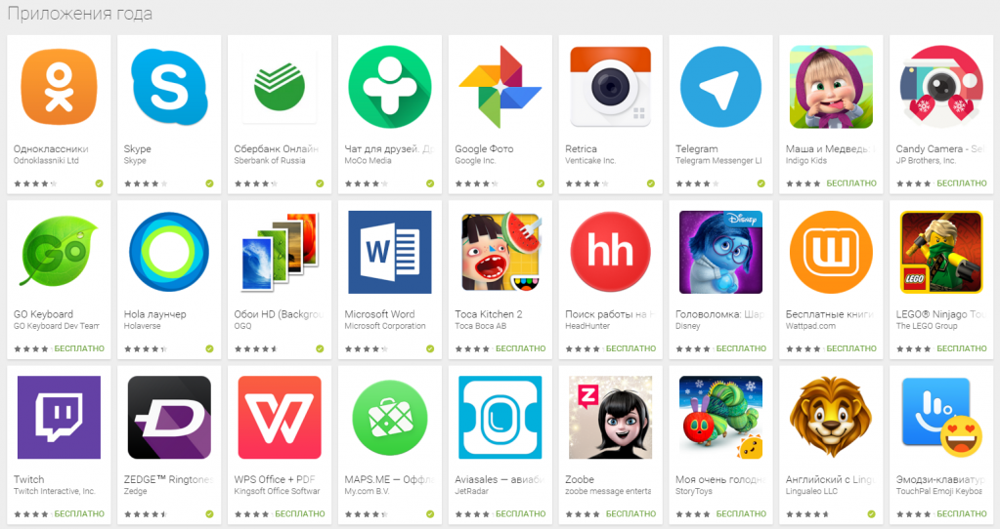

Веб манифест
{
"lang": "ru",
"name": "Progressive Web Application",
"short_name": "PWA Demo",
"description": "Это тестовое Progressive Web Application",
"icons": [{
"src": "./img/icon/app-icon.png",
"sizes": "64x64",
"type": "image/png"
}, ..., {
"src": "./img/icon/app-icon-256.png",
"sizes": "256x256",
"type": "image/png"
}],
"start_url": "/docsite/",
"display": "standalone",
"orientation": "portrait-primary"
}
 
